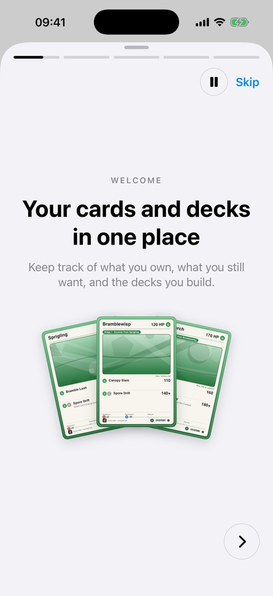
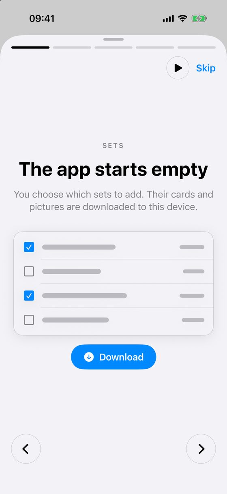
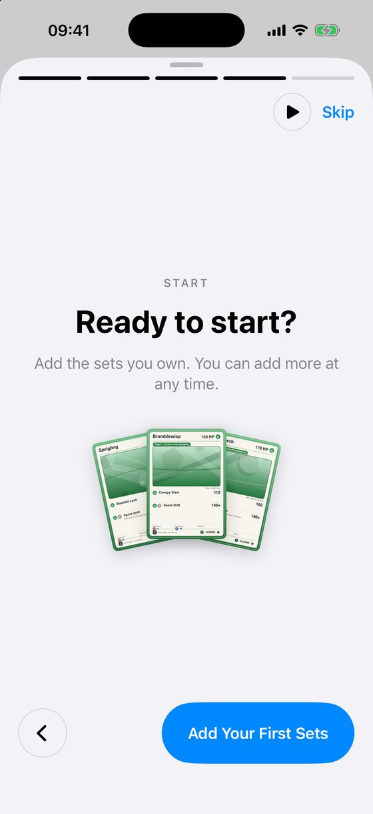
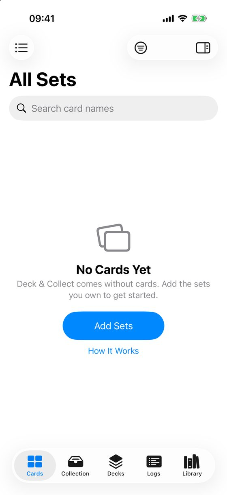
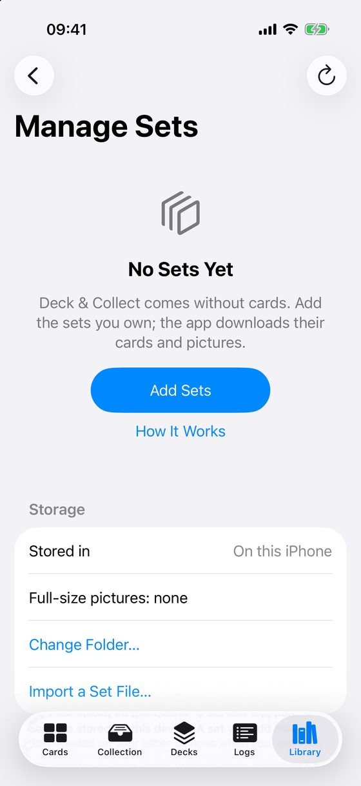
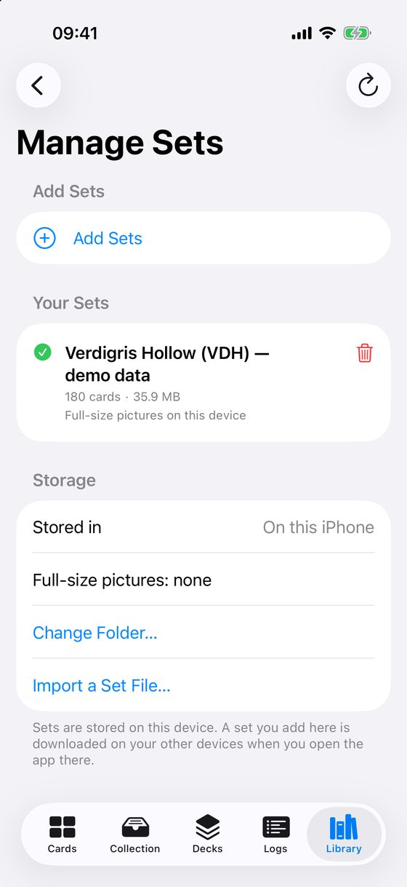
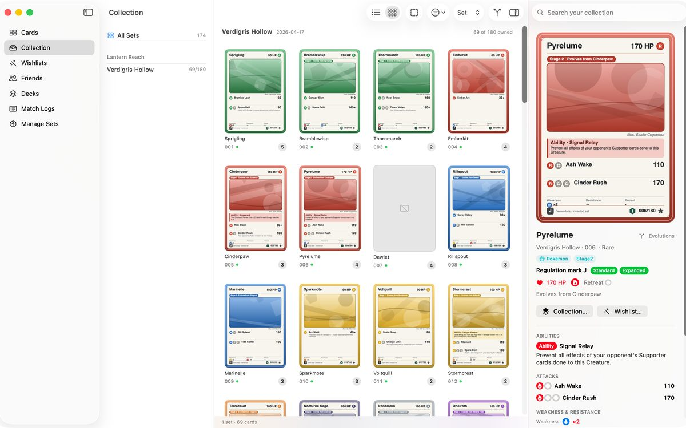

Get started
Deck & Collect comes without cards. You tell it which sets you own, and it downloads their cards and pictures to your device. This takes a few minutes the first time.
The welcome guide
The first time you open the app, a short guide plays. It has five slides and moves on by itself every few seconds. Tap Skip to close it at any time. You can use the arrows to go back and forward, and the round button to pause it.



To see the guide again, open Settings ▸ General ▸ About ▸ Show Welcome Guide, or tap How It Works on an empty screen.
Add your first sets
On the last slide, tap Add Your First Sets. If you skipped the guide, the empty Cards screen has an Add Sets button that does the same.


- On Manage Sets, tap Add Sets. The list of sets loads from TCGdex. You need an internet connection for this.
- If you want cards in a language other than English, choose it under Card language.
- The list shows series, newest first. Tap the arrow beside a series to see its sets. Tick the sets you own. Ticking a series ticks all its sets. A set you already have says Added.
- Tap Download. The button shows how many sets you ticked, for example Download 3 Sets. Sets are large, so use Wi-Fi.
- Each set shows a progress bar. You can leave the screen while it downloads. Stop finishes the set it is on and skips the rest.
- When it says, for example, 3 sets added, tap Go to Cards.
You can add more sets at any time from the same screen. Under Your Sets you see what you have. The bin button removes a set. The app asks first, and your collection keeps its entries.

Try it with demo data first
If you want to look around before downloading anything, the app can load an invented set, a few decks, a small collection and a match log. None of it is real.
- Open Settings ▸ General and find Demo data.
- Tap Try with Demo Data. It takes a few seconds.
- When you have seen enough, tap Remove Demo Data… and confirm. Your own data is not touched.
Where things are
On iPad and Mac, the details of the card you select appear in a pane on the right. On iPhone, a card opens as a sheet.

Next: Find cards